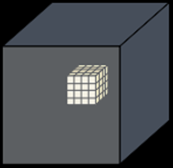
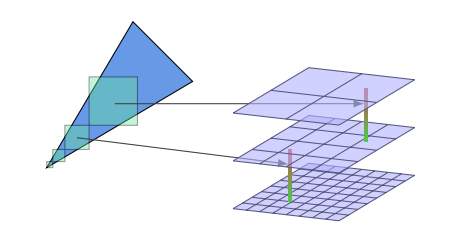

By "4.3 Overview" of [Jensen 2001] and "16.2.2 Photon Mapping" of PBR Book V3, the photon mapping is composed of two steps: photon tracing and rendering. During the photon tracing step, the photon rays are traced from the light sources, and the lighting information of the intersection positions of these photon rays is recorded as the photons. During the rendering step, the primary rays are traced from the camera and the final gather rays are traced from the final gather points, and the lighting information of the vicinal photons of the intersection positions of these primary rays or final gather rays is used to approximate the lighting of these intersection points by density estimation.
By "7.5 Photon Gathering" of [Jensen 2001], "38.2.2 Final Gathering" of [Hachisuka 2005] and "16.2.2 Photon Mapping" of PBR Book V3, the rendering step of the photon mapping is usually composed of two steps: radiance estimate and final gathering. During the radiance estimate step, the primary rays are traced from the camera, and the lighting information of the vicinal photons of the intersection positions of these primary rays is used to approximate the lighting of these intersection points by density estimation. During the final gathering step, from some of the intersection positions of the primary rays, which are called the final gather points, the final gather rays are traced, and the lighting information of the vicinal photons of the intersection positions of these final gather rays is used to approximate the lighting of these intersection positions by density estimation.
| Photon Tracing | Rendering / Radiance-Estimate | Rendering / Final Gathering |
|---|---|---|
|
|
|
By [Crassin 2011], the VXGI (Voxel Global Illumintaion) is composed of three steps: light injection, filtering and cone tracing. The idea of the VXGI is intrinsically to implement the photon mapping by storing the photons in the voxels. The light injection step of the VXGI is analogous to the photon tracing step of the photon mapping. The cone tracing of the VXGI is analogous to the rendering / final gathering step of the photon mapping. The filtering step of the VXGI is analogous to the idea of the density estimation of the photon mapping.
| Light Injection | Filtering | Cone Tracing |
|---|---|---|
 |
 |
 |
As per the original version by [Crassin 2011], the voxels are stored in the SVO (Sparse Voxel Octree). However, by [McLaren 2015] and [Eric 2017], the Clipmap is a better alternative. And actually, the Clipmap is exactly what the NVIDIA VXGI is based on.
By [Eric 2017], there are several approaches to inject the lighting. Some approaches treat the geometry and the lighting separablely. The geometry is voxelized at first, and then the RSM (Reflective Shadow Maps) by [Dachsbacher 2005] is used to inject the lighting later. The advantage of these approaches is that as long as the geometry remains the same, the voxelized data of the geometry can be reused even if the lighting has been changed. However, we will focus on the "voxelization-based" approach which the NVIDIA VXGI is based on. The light injection is performed at the same time when the geometry is voxelized. The most significant advantage of this approach is that the RSM is no longer required. However, the voxelized data can not be reused whenever either the geometry or the lighting has been changed. The VXGI::UpdateVoxelizationParameters::invalidatedRegions is used to invalidate the voxelized data when the geometry has been changed in the NVIDIA VXGI. And the VXGI::UpdateVoxelizationParameters::invalidatedLightFrusta is used to invalidate the voxelized data when the lighting has been changed in the NVIDIA VXGI.
TODO:
By [Panteleev 2014], the NVIDIA VXGI does use the
Toroidal Addressing to reuse the voxelized data. However, it rarely happens that both the
geometry and the lighting remain the same. Actually, the
VXGI::VoxelizationParameters::persistentVoxelData is always set to false in
the NVIDIA Unreal Engine 4 Fork. And the evolution of the rendering technique tends to get
close to the real time solution and get rid of the cache based solution. The DXR (DirectX
Raytracing) is the a typical example for this tendency. Thus, the Toroidal
Addressing is not involved in the current version, but perhaps will be involved in the future
version.
By [Panteleev 2014], we have the logical structure of the Clipmap. The first several clipmap levels have only one mipmap level, and the last clipmap level is the only one which has multiple mipmap levels. The voxel size increases for each (clipmap or mipmap) level. The texture size (voxel count) (of the zeroth mipmap level) of each clipmap level is the same. The volume of each mipmap level of the same clipmap level is the same.
| N/A | 0-0 | 1-0 | 2-0 | 2-1 | 2-2 |
|---|---|---|---|---|---|
| Figure |  |  |
 |
||
| Clipmap Level Index | 0 | 1 | 2 | 2 | 2 |
| Mipmap Level Index | 0 | 0 | 0 | 1 | 2 |
| Voxel Size | 1 | 2 | 4 | 8 | 16 |
| Texture Size (Voxel Count) | 4 | 4 | 4 | 2 | 1 |
| Volume |
|
|
|
|
|
And here is the logical structure of the clipmap used in the Global Illumination sample of the NVIDIA VXGI. Logical Structure: clipmap level 0-3: only one mipmap level; clipmap level 4: mipmap 0-5 (6 levels)
| N/A | 0-0 | 1-0 | 2-0 | 3-0 | 4-0 | 4-1 | 4-2 | 4-3 | 4-4 | 4-5 |
|---|---|---|---|---|---|---|---|---|---|---|
| Clipmap Level Index | 0 | 1 | 2 | 3 | 4 | 4 | 4 | 4 | 4 | 4 |
| Mipmap Level Index | 0 | 0 | 0 | 0 | 0 | 1 | 2 | 3 | 4 | 5 |
| Voxel Size | 8 | 16 | 32 | 64 | 128 | 256 | 512 | 1024 | 2048 | 4096 |
| Texture Size (Voxel Count) | 128 | 128 | 128 | 128 | 128 | 64 | 32 | 16 | 8 | 4 |
| Volume |
|
|
|
|
|
|
|
|
|
|
And here is the physical structure of the clipmap used in the Global Illumination
sample of the NVIDIA VXGI. The clipmap is implemented by the
| 3D Texture Depth Index | Clipmap Level Index | Mipmap Level Index | 3D Texture Width/Height |
|---|---|---|---|
| 1 - 128 | 0 | 0 | 128 |
| 131 - 258 | 1 | 0 | 128 |
| 261 - 388 | 2 | 0 | 128 |
| 391 - 518 | 3 | 0 | 128 |
| 521 - 648 | 4 | 0 | 128 |
| 651 - 714 | 4 | 1 | 64 (64 unused) |
| 717 - 748 | 4 | 2 | 32 (96 unused) |
| 751 - 766 | 4 | 3 | 16 (112 unused) |
| 769 - 776 | 4 | 4 | 8 (120 unused) |
| 779 - 782 | 4 | 5 | 4 (124 unused) |
| 3D Texture Depth Index | Equivalent 3D Texture Depth Index (Toroidal Address) |
|---|---|
| 0 | 128 |
| 129 | 1 |
| ------- | ------- |
| 130 | 258 |
| 259 | 131 |
| ------- | ------- |
| 260 | 388 |
| 389 | 261 |
| ------- | ------- |
| 390 | 518 |
| 519 | 391 |
| ------- | ------- |
| 520 | 648 |
| 649 | 521 |
| ------- | ------- |
| 650 | 714 |
| 715 | 651 |
| ------- | ------- |
| 716 | 748 |
| 749 | 717 |
| ------- | ------- |
| 750 | 766 |
| 767 | 751 |
| ------- | ------- |
| 768 | 776 |
| 777 | 769 |
| ------- | ------- |
| 778 | 782 |
| 783 | 779 |
| ------- | ------- |
| 784 | N/A |
TODO: conservative rasterization
TODO: simulate "conservative rasterization" by MSAA ([Takeshige 2015])
TODO: not related to "ambient occlusion"

TODO: anisotropic voxel
By Additive Interval Property, the
ambient occlusion can be calculated as

By [Crassin 2011 B], the visibility
By "5.5.1 Integrals over Projected Solid Angle" of PBRT-V3
and [Heitz 2017], the integral of the clamped cosine

By "20.4 Mipmap Filtered Samples" of [Colbert 2007], we use the mip-level
The

By [Crassin 2011 B], the under operator is used to calculated the final color
By [Dunn 2014], we have the recursive form of the under operator.
Actually, the explicit form of the under operator can be proved by mathematical
induction.

Evidently, by [McLaren 2015], the cone tracing may NOT dectect the full occlusion which is the result
of mutiple partial occlusions.

TODO
AdjustConePosition
By [Wachter 2019], "3.9.5 Robust Spawned Ray Origins" of PBR Book V3 and "6.8.6 Robust Spawned Ray Origins" of PBR Book V4, we should offset the ray origin to avoid self intersection.
[Jensen 2001] Henrik Jensen.
"Realistic Image Synthesis Using Photon Mapping." AK Peters 2001.
[Hachisuka 2005] Toshiya
Hachisuka. "High-Quality Global Illumination Rendering Using Rasterization." GPU Gems 2.
[Dachsbacher 2005] Carsten Dachsbacher, Marc
Stamminger. "Reflective Shadow Maps." I3D 2005.
[Crassin 2011] Cyril
Crassin, Fabrice Neyret, Miguel Sainz, Simon Green, Elmar Eisemann. "Interactive Indirect Illumination
Using Voxel Cone Tracing." SIGGRAPH 2011.
[Dunn 2014] Alex Dunn.
"Transparency (or Translucency) Rendering." NVIDIA GameWorks Blog 2014.
[Panteleev 2014] Alexey
Panteleev. "Practical Real-Time Voxel-Based Global Illumination for Current GPUs." GTC
2014.
[McLaren 2015] James
McLaren. "The Technology of The Tomorrow Children." GDC 2015.
[Takeshige 2015] Masaya Takeshige.
"The Basics of GPU Voxelization." NVIDIA GameWorks Blog 2015.
[Eric 2017] Eric Arneback. “Comparing a Clipmap to
a Sparse Voxel Octree for Global Illumination." Master thesis 2017.
[Heitz 2017] Eric Heitz. "Geometric Derivation of
the Irradiance of Polygonal Lights." Technical report 2017.